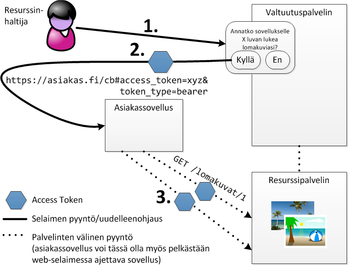
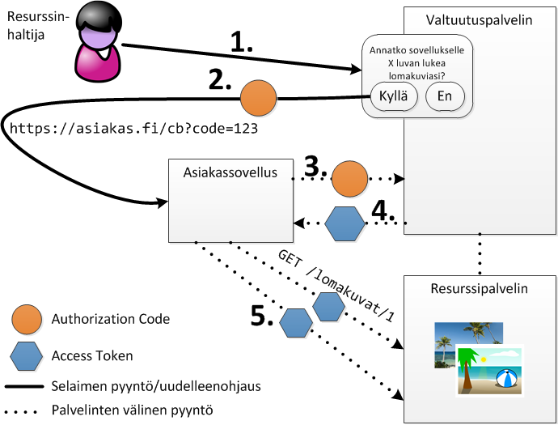

Autentikointi tarkoittaa käyttäjän tunnistamista
Web-sovelluksessa autentikointiin voidaan käyttää useita eri menetelmiä
Tänään käydään läpi:
Autentikointi (todennus, authentication)
Autorisointi (valtuutus, authorization)
HTTP:n Authorization-otsikkokenttä on huonohkosti nimetty
HTTP määrittelee Basic -autentikointitavan
Pyyntö Basic -autentikointitavalla suojattuun resurssiin palauttaa
HTTP/1.1 401 Unauthorized
...
WWW-Authenticate: Basic realm="salapaikka"
...Authorization-otsikkokentässä annetaan käyttäjätunnus ja salasana
base64-enkoodattunaGET /tiedostoja HTTP/1.1
Host: example.com
Authorization: Basic YWh0bzoxMjM0
...Authorization-otsikkokenttä muodostetaan
seuraavasti:Basic -merkkijonon perään| 1. | Käyttäjätunnus: ahto, salasana: 1234 |
| 2. | ahto:1234 |
| 3. | YWh0bzoxMjM0 |
| 4. | Basic YWh0bzoxMjM0 |
Authorization: Basic YWh0bzoxMjM0> btoa('ahto:1234')
"YWh0bzoxMjM0"> atob('YWh0bzoxMjM0')
"ahto:1234"basic-auth-pakettianpm install basic-auth --savevar basicAuth = require('basic-auth');
function authMiddleware(req, res, next) {
var user = basicAuth(req);
if (user && user.name === 'ahto' && user.pass === '1234') {
next();
}
else {
res.status(401).header('WWW-Authenticate', 'Basic realm="sala"')
.send();
}
}Digest on toinen HTTP:ssä määritelty autentikointitapa
Digest-tavassa ei lähetetä selkokielistä käyttäjätunnusta ja salasanaa vaan tiiviste (hash)
Tiiviste lasketaan MD5-algoritmilla, jonka syötteeksi annetaan salasana, palvelimen palauttama kertakäyttöluku (nonce) ja muita tietoja
HA1 = MD5(username:realm:password)
HA2 = MD5(method:digestURI)
response = MD5(HA1:nonce:HA2)Basic:
Digest
HA1 joten se ei voi käyttää parempia
salausalgoritmeja salasanan tallentamiseenHA1 = MD5(username:realm:password)HTTP Basic (tai Digest) ei ole kovin hyvä ratkaisu kun asiakkaana on web-selain
Yleensä web-sovelluksen autentikointi toteutetaankin lomakkeella
Lomakelähetyksen sijasta voidaan kirjautuminen tehdä myös Ajax-kutsulla
Tässäkin salasana siirty selkokielisenä ellei käytetä HTTPS:ää
npm install passport --savePassport tukee erilaisia autentikointitapoja
Eri autentikointitavat ("strategiat") ovat omina paketteinaan
npm install passport-local --savevar passport = require('passport');
var BasicStrategy = require('passport-http').BasicStrategy;passport.use(new BasicStrategy(
function(username, password, done) {
User.findOne({username: username}).then(function (u) {
if (u && u.password === password) {
done(null, u);
}
else {
done(null, false);
}
});
}));app.use(passport.initialize());
app.get('/salainen',
passport.authenticate('basic', {session: false}),
function(req, res) {
// ...
}Edellä olleessa Basic-esimerkissä salasana tarkistetaan joka kutsulla
Parempi tapa on tallentaa tieto kirjautuneesta käyttäjästä istuntodataksi
app.use(passport.initialize());
app.use(passport.session());passport.serializeUser(function(user, done) {
done(null, user.id);
});passport.deserializeUser(function(id, done) {
User.findById(id, function(err, user) { done(err, user); });
});connect-ensure-login -middlewareavar ensureLoggedIn = require('connect-ensure-login').ensureLoggedIn;passport.use(new LocalStrategy( /* ... */ );
app.post('/login', passport.authenticate('local',
{successReturnToOrRedirect: '/',
failureRedirect: '/login'}));
app.get('/login', function(req,res) {
res.render('kirjautumissivu');
});
app.get('/salainen', ensureLoggedIn('/login'), function(req, res) {
res.render('salainen');
});Joskus on kiva jos web-sovellus A voi olla yhteydessä toiseen web-sovellukseen B käyttäjän puolesta
Tätä varten käyttäjän täytyy valtuuttaa A käyttämään B:tä hänen puolestaan
Yksinkertaisin ratkaisu: käyttäjä antaa B:n käyttäjätunnuksensa ja salasanansa A:lle
OAuth on standardi, jonka avulla resurssinhaltija (käyttäjä) voi valtuuttaa asiakassovelluksen käyttämään hänen resurssipalvelimella sijaitsevia resursseja
Asiakassovelluksen ei tarvitse tietää resurssinhaltijan käyttäjätunnusta eikä salasanaa
Valtuutusta voidaan rajata mielivaltaisesti
Valtuutus voidaan perua helposti
Tässä käsitellään OAuth:n versiota 2.0
OAuth 2.0 määrittelee neljä roolia
Resurssinhaltija (resource owner)
Resurssipalvelin (resource server)
Asiakassovellus (client)
Valtuutuspalvelin (authorization server)
OAuth 2.0 määrittelee neljä erilaista valtuutustapaa
Authorization Code Grant
Implicit Grant
Resource Owner Password Credentials Grant
Client Credentials Grant


OAuth 2.0:ssa voidaan käyttää eri tyyppisiä access tokeneita
Samalla kun valtuutuspalvelin palauttaa access tokenin, palauttaa se myös sen tyypin
Yksinkertaisin tyyppi on ns. bearer, jossa access token välitetään
sellaisenaan Authorization-otsikkokentässä
Authorization: Bearer jfHIUA82jfi9d29d